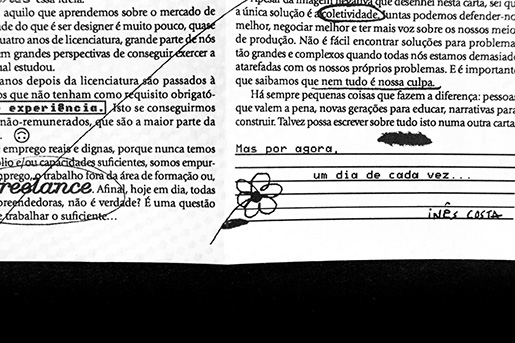
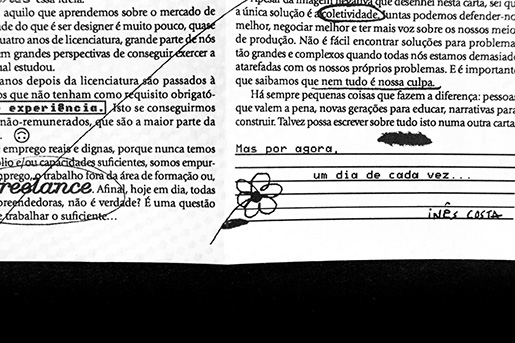

Inês Costa, nascida em Viseu, no ano de 1998. Designer, pesquisadora e artista multidisciplinar. Formada em Design de Comunicação (2020) e com um mestrado em Design da Imagem (2022), pela FBAUP.
A minha pesquisa foca-se, sobretudo, no papel da imagem na construção de narrativas e da memória social e cultural. Faço-o através do cruzamento do design, do cinema e do som, da colagem e do sarcasmo, numa tentativa de problematizar aquilo a que chamamos “imagem”, enquanto ferramenta de linguagem e de ação sócio-política.
Desde 2021, tenho mostrado o meu trabalho em festivais de cinema nacionais como Entre-Olhares, Curtas Vila do Conde, Cinanima, Vista Curta, Porto/Post/Doc e IndieLisboa e atualmente faço direção de criação para a APCA Madeira. Participei em exposições coletivas como “As Memórias dos Outros” (2023), dei workshops de animação para crianças, tanto em contexto de festivais como o Encontros de Viana, mas também enquanto projeto contínuo através de parcerias entre escolas e o Cinanima. Em 2024, fui convidada a participar nas Cartas sobre Design e tenho um texto publicado na revista Alix.
Para além de tudo isso (e porque ser artista não é fácil nesta economia, pelo menos para quem não é herdeiro), desenvolvo trabalho fotográfico para eventos culturais na CRL Central Elétrica, como o Volts24, Volts25 e Watts.
Aquilo que faço não é design, mas a minha formação em design permite-me trabalhar com uma série de ferramentas e recursos, cruzando áreas e saberes, sendo o mais importante de todos, o saber ver. Pesquisei durante quatro anos sobre a relação entre a imagem e a construção de narrativas coloniais, principalmente no contexto português. Depois, comecei a trabalhar sobre a imagem e a memória, de uma forma mais geral. Agora, estou a pesquisar sobre a imagem na era digital, pós-capitalista que já vivemos. Nunca faço a mesma coisa duas vezes, experimento, erro e erro de novo. Sou curiosa e atenta e tenho muitas opiniões que muitas vezes incomodam. Que bom. Bem-vindo ao meu website, que bom ver-te por cá. Explora-o à vontade e qualquer dúvida, podes sempre escrever-me e perguntar.